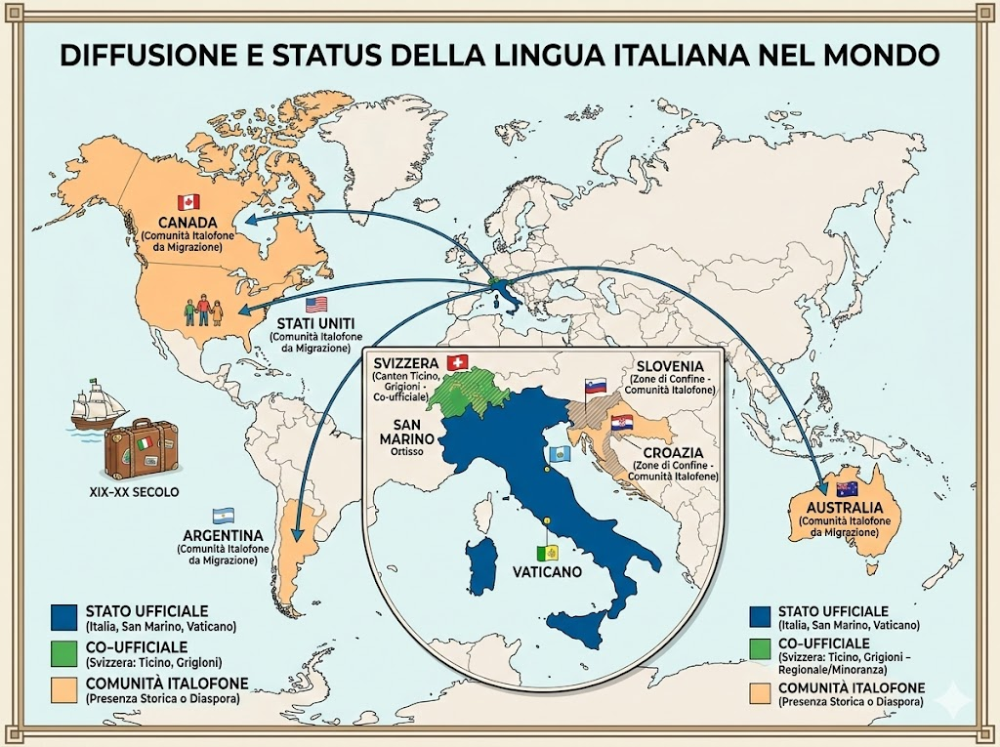

L’italiano è la lingua ufficiale dell’Italia e una delle lingue ufficiali della Svizzera, in particolare nel Canton Ticino e in parte dei Grigioni. È inoltre lingua ufficiale nella Repubblica di San Marino e nella Città del Vaticano. Comunità italofone sono presenti anche in Slovenia e Croazia, soprattutto nelle zone di confine, e in molti altri Paesi del mondo come Argentina, Stati Uniti, Canada e Australia, grazie ai flussi migratori italiani tra Ottocento e Novecento.

Le lingue romanze sono un gruppo di lingue derivate dal latino parlato nell’antica Roma e si sono sviluppate dopo la caduta dell’Impero romano. Tra le principali lingue romanze ci sono l’italiano, il francese, lo spagnolo, il portoghese e il rumeno. Sono diffuse soprattutto in Europa e nelle Americhe, ma anche in alcune regioni dell’Africa e dell’Asia, grazie alle espansioni coloniali dei secoli passati. Pur essendo diverse tra loro, condividono molte somiglianze nel vocabolario e nella struttura grammaticale proprio per la loro origine comune.

La storia dell’italiano inizia dal latino volgare parlato nell’antica Roma e si sviluppa nel Medioevo con la nascita dei volgari regionali. Un ruolo fondamentale ebbe Dante Alighieri, che con la Divina Commedia contribuì a dare prestigio al volgare fiorentino. Nei secoli successivi l’italiano si affermò come lingua della cultura e della letteratura, anche grazie al lavoro dell’Accademia della Crusca. Nell’Ottocento, con l’Unità d’Italia, autori come Alessandro Manzoni favorirono la diffusione di un italiano più uniforme, che nel Novecento si consolidò come lingua nazionale parlata in tutto il Paese.